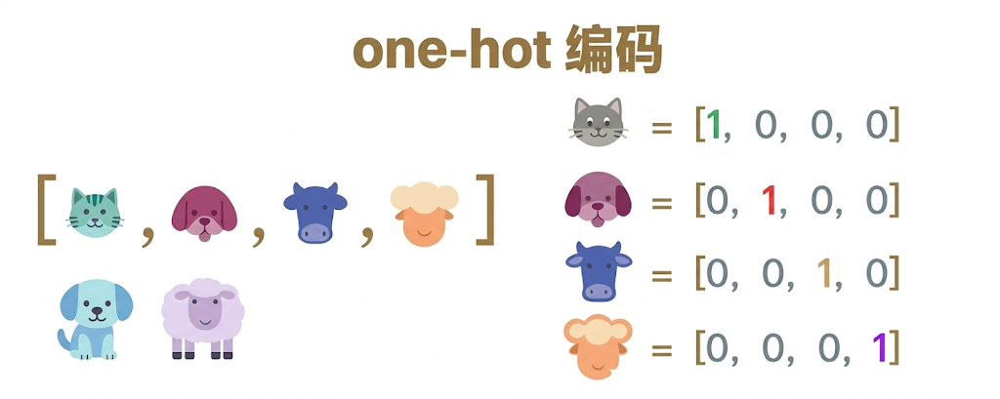
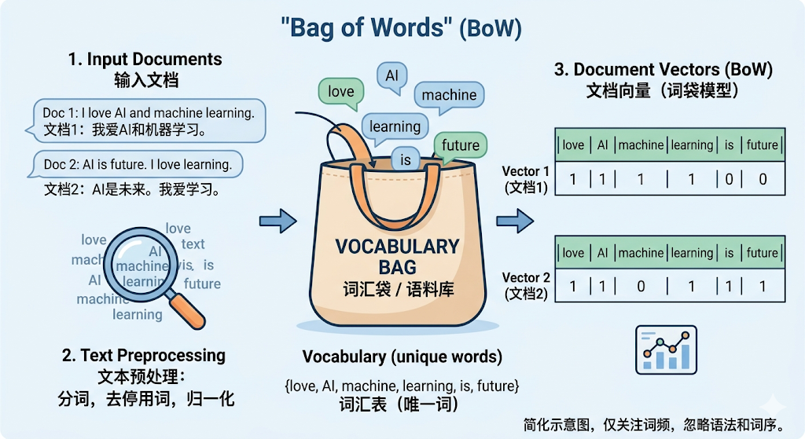
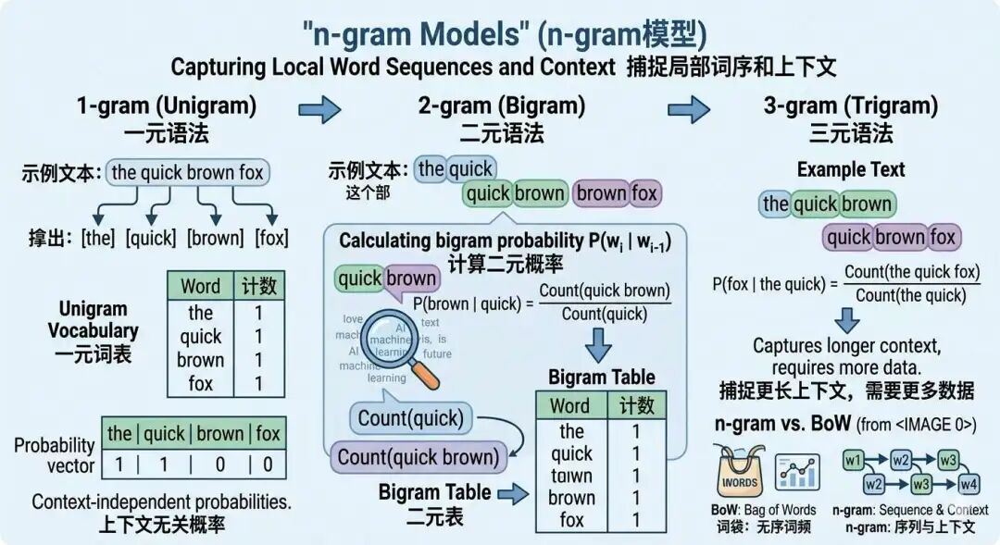
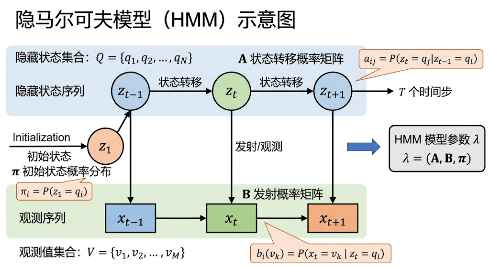

"编程是一种艺术，也是一种科学。它既需要创造力，也需要逻辑思维。对于我来说，编程最大的乐趣在于解决复杂问题的过程。"--Java之父Gosling
我们普通人接触到 NLP（自然语言处理）这门技术最多的地方，恐怕就是大模型了。
OpenAI的ChatGPT、Google的Gemini、 阿里巴巴的通义千问（Qwen），在这波 AI 浪潮中迅速崛起，成为了搜索引擎之外，获取信息的又一便捷渠道。
NLP是一门什么样的技术呢？它背后隐藏着什么样的奥秘，使得我们向大模型提问，它就能够像"人"一样对答如流。
自然语言处理，英文全称为Natural Language Processing，简称NLP，是一门能够让计算机理解、处理、生成人类语言的技术。简单来说，就是教会机器"听懂人话"并"说人话"。
我们先来回顾一下NLP技术的发展史，从中了解并学习NLP技术的本质。
最早从1950 年代自然语言处理技术就开始萌芽了，那个时候的研究方法被称为"符号主义"方法，计算机理解自然语言采用了像人类一样依赖明确的规则和逻辑的方法，就像学外语时需要背语法书，每条规则都靠死记硬背。
这个时候的技术实现就是由人工来编写规则，再发展成为词典与知识库、以及最较为成熟的专家系统，我们先来看看人工编写规则实现的NLP技术。
指的是用语法规则严格定义句子的结构，像数学公式一样生成合法句子。比如：
（1）"句子"是由"名词短语"+"动词短语"构成的。
（2）"名词短语"是由"冠词"+"名词"构成的
（3）"动词短语"又是由"动词"+"名词短语"构成的
按照上面三条规则就可以判断哪些句子是合法的句子，哪些是非法的句子：
（1）The cat eats the fish.（猫吃鱼）
（2）Eats the cat fish the.（词语顺序混乱）
很明显，第一句符合语法规则的，是名词短语+动词短语构成的，而第二句则是非法句子，词语顺序混乱。
这种方法就像搭积木一样拼句子，可以识别正规的语法结构，但是无法处理灵活表达，比如省略冠词：的句子"Cat eats fish"就会被判错，以及俚语和诗歌等不遵守语法的场景就无法应对了。
人工编写的规则只能判断语法结构，无法理解词与词之间的关系，而通过编写词典，可以定义词的语义和词之间关系，从而构建一本语言的"百科全书"。
1）定义词义：
2）标注关系：
这种方式可以帮助机器理解"概念"了，至少它知道猫是属于哪个类别，有什么特征了。同时也知道概念和概念之间的语义关系，懂得同义词关系、上下位关系和反义词关系。
但这种方式的缺陷就在于维护成本太高了，想想看这本词典该要有"多厚"，并且无法动态的根据语境来解决歧义，比如"苹果"这个词，究竟是苹果公司还是水果？
前面两种技术只能初步解决语言理解层面的问题，但无法决策，而专家系统的NLP技术可以用逻辑规则模拟人类专家的决策过程，解决特定领域问题。例如医疗诊断系统规则库：
当用户输入：症状：发烧、咳嗽、流鼻涕时，会触发专家系统进行推理：触发规则1 -> 输出诊断结果："疑似感冒，建议服用感冒药并休息。"
这种方式能够使机器具备专业领域自动决策的能力，但是依然无法广泛应用，其依赖领域专家编写规则，适合具备逻辑判断的知识领域，比如法律咨询、医疗医药行业。
其弊端在于无法处理规则外的症状，比如"发烧+腹泻"若未定义规则，系统会报错，且逻辑死板，无法像人类医生一样进行综合判断。
随着"符号主义"方法的弊端出现，人工智能科学家们开始尝试使用统计学中的知识来实现计算机对自然语言的理解。
统计语言模型的核心思想是从大量数据中统计语言的规律，用概率表示不确定性。我用下面这两个例子很快就能让你明白：
（1） 比如"吃饭"比"吃车"更可能出现在句子中。
（2）又比如"喝水"比"喝风"更可能出现在句子中。
这个阶段出现了几种代表性的模型，首先是文本的数值编码方法：One-Hot 编码和 BoW 词袋模型；然后是衡量词重要性的 TF-IDF 算法；接着是用于序列预测的 n-gram 模型；最后是引入隐藏状态的隐马尔科夫模型（HMM）。
由于统计模型的一切计算都建立在数值运算之上，我们先来聊聊One-Hot编码，由于计算机的计算本质其实是0和1的数值运算，所以为了让计算机能够认识自然语言，最初的想法是先教会计算机认识类别，用数值序列，即向量来表示。

One-Hot编码的核心作用是将离散的类别特征转化为二进制向量，每个向量中仅有一个位置为1，表示当前类别，其余为0，且向量长度等于类别总数。
假设有一个动物类别集合：["猫", "狗", "乌龟", "鱼"]，构建的One-Hot编码如下：
通过这种方式，计算机开始能够初步区分离散型的类别事物了，以及使得模型可以接收输入数据了。
OneHot编码将分类数据转换为二进制的向量，解决了类别无法直接输入模型和消除虚假序数关系的问题。
但是 One-Hot 编码有局限性，它只能表示单个单词，无法捕捉整个文本的特征。我们需要一种方法，既能保留单词的信息，又能表示整个文本的整体特征。
在 One-Hot 编码中，每个单词被表示为一个独热向量；而在 BoW 中，整个文本或句子被表示为一个向量，向量的每个维度对应词汇表中的一个单词，值表示该单词在文本中出现的次数。

BoW编码过程
例如我们现在有这样一个文档，这个文档里面有两个句子：
1） "I love cats and dogs."
2）"Dogs love running in the park."
BoW 首先会对所有单词统一转换成小写，同时去除标点符号，再进行分词：
紧接着合并所有单词并去重，按出现顺序生成词汇表：
词汇表 = ["i", "love", "cats", "and", "dogs", "running", "in", "the", "park"]
为每个句子统计每个单词在词汇表中的出现次数，生成向量：
有了这样的向量表示，我们就可以利用它做很多事情了，可以用于传统机器学习模型的训练（如 SVM、朴素贝叶斯等），也可以利用向量的距离计算公式，对文本进行进一步处理，比如我们之前学习过的SVM计算。
BoW 的局限性
BoW 的核心思想是忽略词序，仅关注词汇的出现频率或存在性。但是这样有个局限性，例如，句子"狗咬人"和"人咬狗"在BoW中会被表示为相同的向量。
| 词 | 文档1 | 文档2 | 文档3 |
|---|---|---|---|
| the | 2 | 2 | 0 |
| cat | 1 | 0 | 0 |
| quantum | 0 | 0 | 1 |
| physics | 0 | 0 | 1 |
这样做的好处是牺牲部分语义信息以换取计算的可行性，使模型能快速处理大规模文本。
但是这样也带来了局限性，首先是语义丢失，忽略词序导致无法区分"狗咬人"和"人咬狗"。
其次是高维稀疏性，词汇表可能包含数万维度，但单个文档中仅有少量非零值，而0本身无意义，导致存储和计算效率低下。
然后针对同义词与多义词，无法捕捉语义相似性，如"计算机"和"电脑"被视作独立特征。
另外由于 BoW 算法只统计词频，这样导致又出现了另一些弊端，比如定冠词"the"，在几乎所有文档中都频繁出现，导致这些词在向量中占据主导地位，但实际对文档区分无意义，于是出现了 TF-IDF 算法。
TF-IDF，英文全称为Term Frequency-Inverse Document Frequency，是一种用于信息检索和文本挖掘的统计方法，用于评估一个词在文档或语料库中的重要程度。
其核心思想是：一个词的重要性与其在文档中的出现频率成正比，但与它在整个语料库中的普遍性成反比。
这个核心思想要怎么理解，这其实就是 TF和IDF的意义。
顾名思义，词出现的频率，即衡量词在文档中的出现频率。
衡量词在文档中的出现频率。常用计算方法：
也可采用对数或调整后的形式，例如：
$$ \text{TF}(t, d) = 1 + \log(\text{原始词频}) $$假设语料库有3个文档：
计算词"example"在文档3中的TF：
TF = 文档3中"example"出现2次，总词数3 ，则TF = 2/3 ≈ 0.666。
光听名字还是很难理解的，什么是逆文档，频率。它是用来衡量词在全局（范围是所有文档，不是单个句子，也不是其中一个文档，而是所有文档）中的重要性。
这也好理解，如果一个词在语料库中非常的罕见，比如专业术语，则表示这个词有很强的区分能力，比如如果出现了一个医疗词汇，那么很有可能这个文档的类别就是和医疗有关。
$$ \text{IDF}(t, D) = \log\left(\frac{\text{语料库中文档总数 } N}{\text{包含词 } t \text{ 的文档数 } \text{df}(t)}\right) $$为避免分母为零，可添加平滑项+1，例如：
$$ \text{IDF}(t, D) = \log\left(\frac{N + 1}{\text{df}(t) + 1}\right) + 1 $$假设语料库有3个文档：
计算词"example"在文档3中的IDF：包含"example"的文档数df(t)=2，总文档数N=3 -> IDF = log(3/2) ≈ 0.405（自然对数）。
最终 TF-IDF 的值就是两者相乘：0.666 × 0.405 ≈ 0.270。
通过 IDF 衡量词的全局重要性，解决了BoW的局限性问题：罕见词（如技术术语）获得高权重，常见词（如"的""and"）被抑制。
TF-IDF 解决了"哪些词更重要"的问题，但文本理解不仅仅是识别关键词--我们还需要知道词与词之间的顺序关系。比如"今天天气很好"和"天气今天好很"包含完全相同的词，但前者是通顺的句子，后者则不是。如何让模型捕捉到这种词序信息呢？这就引出了 n-gram 模型。
n-gram 模型是一种统计语言模型，通过计算文本中连续 n 个词（或字符）出现的频率，预测下一个词的概率。 其中 n 指的是连续的语言单元有多少个，gram指被统计的最小语言单元，如单词或字母。需要注意的是，n-gram 可以按"字"级别切分，也可以按"词"级别切分，下面的例子我们统一按"词"级别来演示：
1）n=1 -> unigram，表示单个词出现的概率，如"今天"，"今"和"天"两个字连续）。
2）n=2 -> bigram，表示相邻的两个词同时出现的概率，如"今天天气"，"今天"和"天气"两个词连续）。
3）n=3 -> trigram，表示相邻的三个词同时出现的概率，如"今天天气不错"，"今天"、"天气"和"不错"三个词连续。

我们通过一个小案例来说明n-gram 的使用原理，假设有一个很小的语料库，里面只有以下3句话：
然后我们用 bigram（n=2）来预测天气描述，首先我们统计频率：
经过上面的概率统计，当我们预测下一个词是什么的时候：
朴素的理解 ，n-gram 模型就是通过统计文本中词语的常见搭配来预测下一个词。
虽然 n-gram 通过统计的方法实现了高效的预测，但是其很依赖于语料库的丰富度，并且无法捕捉长距离语义依赖，如段落首尾的关联，和深层含义如反讽或同义词。
n-gram 模型有一个致命弱点：当语料库不够丰富时，遇到低频组合就会失效。例如n-gram 若未见过"吃榴莲"，会判定概率为0；而隐马尔可夫模型（HMM）通过引入"隐藏状态"（如词性）来缓解这个问题。
HMM 的思路是：虽然"吃榴莲"这个具体组合没见过，但"动词+名词"这种搭配模式是常见的（如"吃苹果""吃西瓜"），所以即使"榴莲"未出现过，也能推测"吃榴莲"比"吃桌子"更合理。

HMM本质上依然是一种概率模型，用于描述由隐藏状态序列生成观测序列的过程。它由以下关键组成部分：
1）隐藏状态（Hidden States）：不可直接观测的抽象变量（如词性、音素）。
2）观测值（Observations）：实际可见的数据（如汉字、语音信号）。
3）三组参数：
隐马尔科夫模型还依赖于两个核心假设：
（1）当前状态仅依赖前一状态，与更早的历史无关，称为"马尔科夫性质"。
（2）观测独立性：当前观测值仅由当前状态生成，与前序观测无关。
这样说可能还是不够直观和清晰，下面我们用一个最经典的 HMM 应用场景--中文拼音输入法--来理解它的工作原理。我们要将用户输入的拼音序列，如 wo ai转换为最可能的汉字序列"我爱"。以下是具体实现：
1） 拼音切分与候选生成
用户输入拼音的时候是连续的，如wo ai，先将连续拼音拆分为合法拼音组合：wo + ai。
查询拼音字典（新华字典），每个拼音对应多个可能的汉字，按优先级排序。
2）计算HHM核心参数
a. 状态转移概率（主体名词 -> 动作动词）
b. 观测概率（拼音 -> 汉字）
3）动态规划搜索最优路径（维特比算法）
目标：在所有可能的汉字组合中，找到概率最高的序列。
| 步骤 | 核心目标 | 关键操作/公式 | 示例 (拼音输入: wo ai) |
|---|---|---|---|
| 1. 初始化 | 计算第一个拼音对应的所有候选汉字的初始概率。 | P(汉字₁) = 初始概率(汉字₁) × P(拼音₁丨汉字₁) | P(我) = 0.8 × 0.9 = 0.72 - P(沃) = 0.1 × 0.1 = 0.01 |
| 2. 递推 | 从第二个拼音开始，逐步计算每个候选汉字的累计最大概率，并记录其最优前驱节点。 | P(汉字ₖ) = maxᵢ [P(汉字ᵢ) × P(汉字ₖ丨汉字ᵢ)] × P(拼音ₖ丨汉字ₖ) （其中 i 遍历前一个拼音的所有候选汉字） | 计算"爱"的概率： - 经"我": 0.72 × 0.1 × 0.85 ≈ 0.0612 - 经"沃": 0.01 × 0.01 × 0.08 ≈ 0.000008 ∴ P(爱) = max(0.0612, 0.000008) = 0.0612，最优前驱是"我"。 |
| 3. 回溯 | 从最后一个拼音的概率最高点开始，反向追踪最优前驱节点，拼接出全局最优路径。 | 从终点开始，根据每一步记录的最优前驱节点，反向链接至起点，形成最终序列。 | 1. 终点"爱"的最优前驱是"我"。 2. 因此，最优路径为：我 -> 爱。 |
HMM虽然可以实现一些简单的NLP应用，但其依然存在着诸多局限性，首先是数据依赖性强：依赖人工标注的语料库，无法自动适应新词（如"yyds"）；
其次是短距离依赖：仅能捕捉相邻词的关系，无法处理长句逻辑（如"虽然…但是…"）；最后是多音字歧义：需依赖上下文解决（如"重"在 zhong 和 chong 间的选择），但HMM只能通过前一词调整。
以上就是NLP早期的基础入门知识。从手工编写规则的符号主义，到用概率统计"让数据说话"的统计模型，NLP 技术一步步从死板走向灵活--但即便是 HMM，也只能看到"前一个词"的信息。
如何让模型真正理解更长的上下文？下一篇我们将进入词嵌入（Word2Vec）和循环神经网络（RNN）的世界，看看深度学习是如何彻底改变 NLP 的。